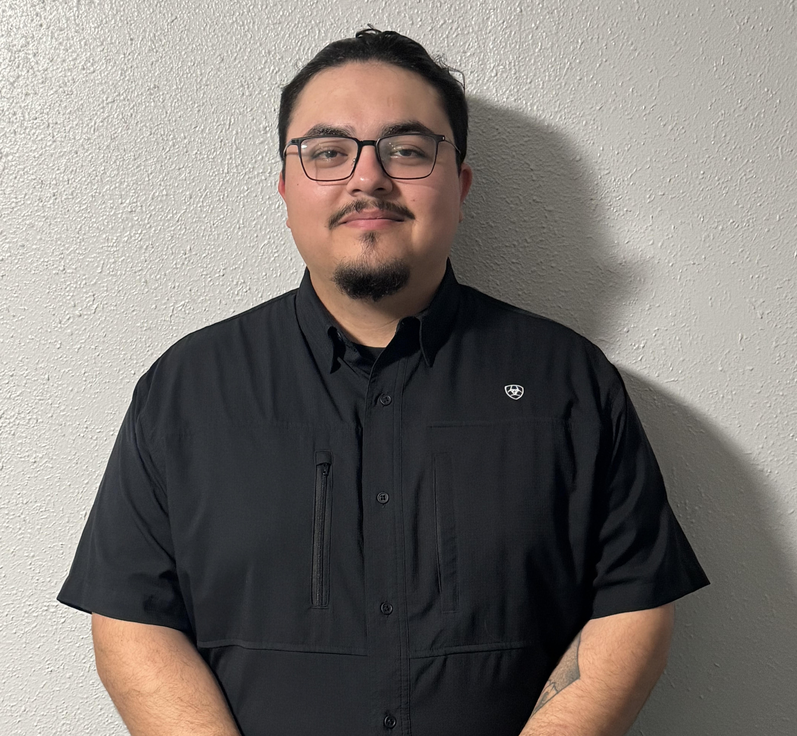

Edwin Leos is the man in my life, and someone I deeply admire. If I had to describe him, I would say he is confident, genuine, and fair, with a strong sense of integrity and dependability. He is a Certified Welding Inspector and even passed his certification on the first try, something that is extremely difficult to do. This accomplishment says a lot about his focus, determination, and commitment to his work. In his job, he approaches every inspection with care and precision, always making sure things are done correctly and thoroughly, no matter the project.
He is passionate about welding, staying active at the gym, and working on hands-on projects. One of the things that stands out most about him is the way he turns challenges into opportunities for growth. He is always learning something new, building something, or pushing himself to improve. Outside of work, he values spending time with family, friends, and with me, which helps him stay balanced and grounded. He also enjoys being outdoors, staying active, and working on projects that keep both his mind and body engaged.
Something people might not notice right away is his strong loyalty and work ethic. He has faced challenges early in life that taught him resilience and the importance of setting healthy boundaries. His grandfather has been a major influence on him, teaching him the value of hard work and maintaining a positive attitude, lessons that Edwin carries with him in everything he does.
Overall, he is strong-willed, dependable, and capable of achieving whatever he sets his mind to, while also remaining thoughtful, kind, and grounded. He is the kind of person who makes you feel like everything is in good hands, whether at work or in life.